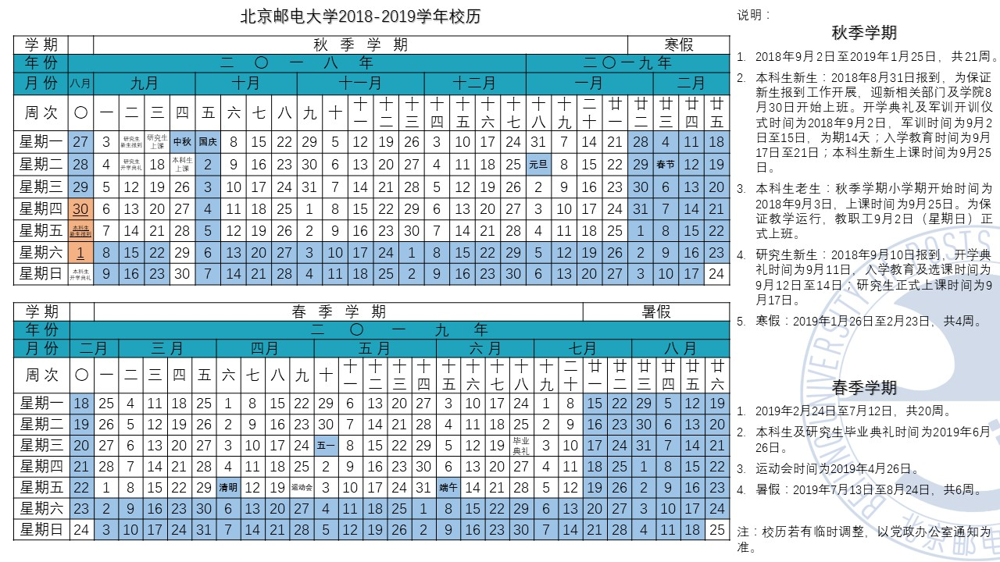

1.校历
蓝色为放假时间，具体安排以假前通知为准
2.选课
首先请熟读软件工程培养方案（就是你们入学的时候拿到的黄册子）（此处留一个下载电子版的坑）
课程分为必修和选修。限制选修课的因素包括课程类别和课程学分。不同的课程类别有不同的最低修读分数，每一门选修课有对应的学分。（此处不理解的话请回校后对照培养方案再读一次）
选课时间为军训结束后一周内，本学期选修课表及选课时间待通知，之前你们流传的课表为往届的，可以参考但会有变动。
3.各种联系方式辅导员办公室在图书馆东配楼（沿图书馆中街走到尽头，左侧为东配楼），软件学院在310。
辅导员办公电话：66605114（办公室正在布置中，电话暂未接通，接通后会更新）
个人电话：17610495925（微信同号）
QQ：87256328
建议优先使用微信沟通，沙河校区信号不太好emm
沙河保卫处 66605110（在校园内或者校园周边遇到危险一定要联系保卫处）
宿舍值班室 A楼 66605127 B楼 66605129 D2楼 66605130
医务室咨询 66605120
其余校内办公电话可以通过北邮官网www.bupt.edu.cn/和沙邮官网https://shahe.bupt.edu.cn/查询
4.常用网址 北邮官网https://www.bupt.edu.cn/ 沙邮官网https://shahe.bupt.edu.cn/ 信息门户（老师回连队了下次接着更新）